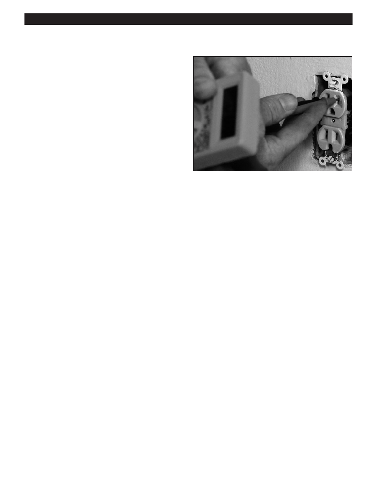

PA RT I C I PA N T R E S O U R C E G U I D E
Testing Receptacles (Continued)
How to Use a Multimeter to Test
for Power
1. Insert a multimeter probe into each slot of the receptacle.
2. If the power is ON, the display will show a voltage reading
between 115 and 125 volts.
3. If the power is OFF, the display will show a voltage
reading between 0 and 2 volts.
4. Test between each slot and ground. One slot should read
between 115 + 125. The other slot should read 0.
3. This assures that there is NO continuity between
Hot and Neutral
How to Use a Multimeter to Identify the “Hot” Wire
1. Turn off power to the receptacle.
2. Remove the cover plate.
3. Confirm that the power to the receptacle is OFF by touching a probe to each screw terminal. If the power is OFF,
the display will show a voltage reading between 0 and 2 volts.
4. Remove the receptacle and spread out the wires.
5. Restore power to the receptacle. Be careful not to touch any of the wires.
6. Touch one multimeter probe to each wire while touching the other probe to the ground (metal box).
7. The display will show a voltage reading between 115 and 125 volts for the “hot” wire.
Notes:
50